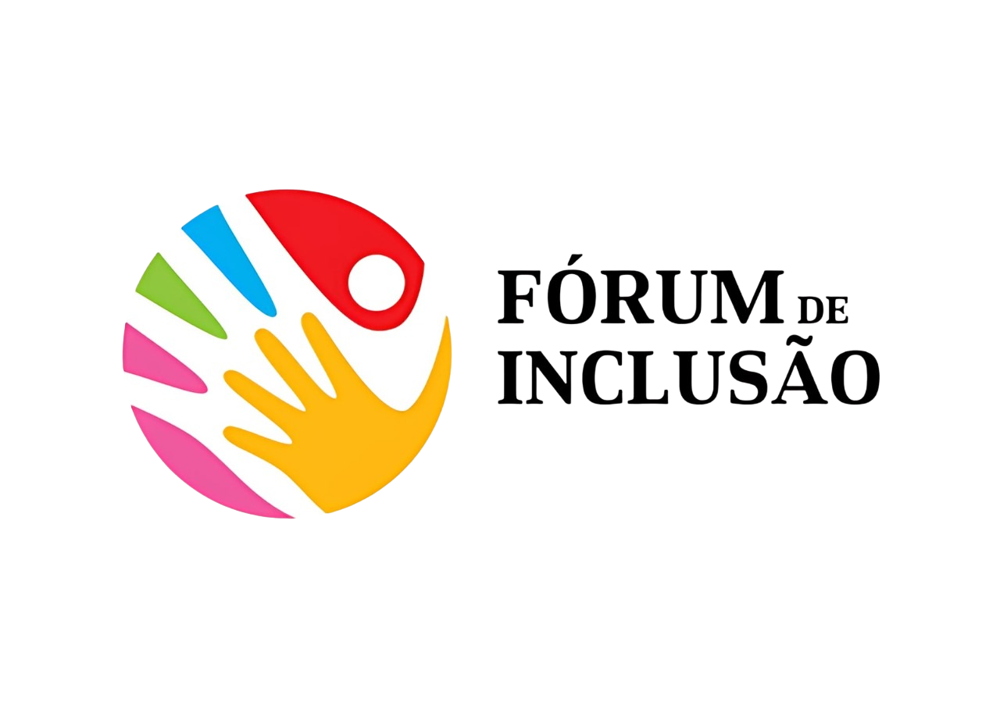
Um espaço para compartilhar experiências.
Materiais e conteúdos produzidos por especialistas.
Um ponto de encontro onde cada voz importa.
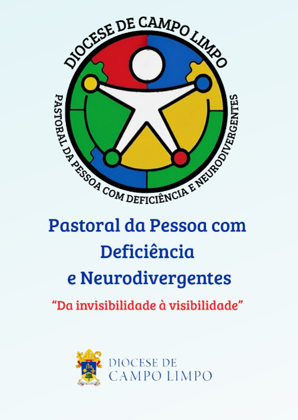
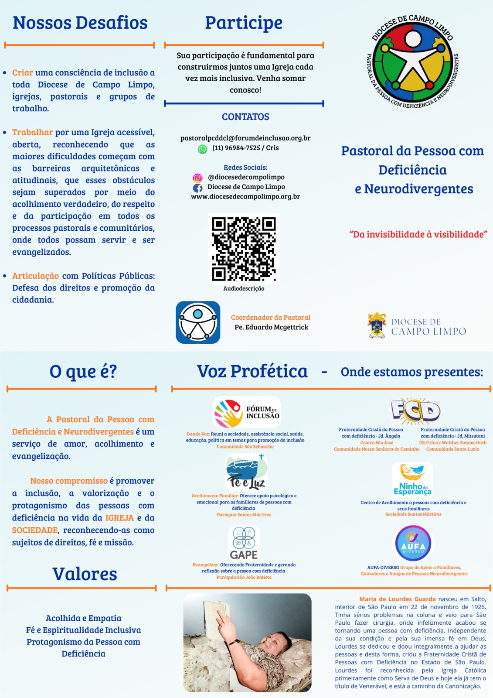
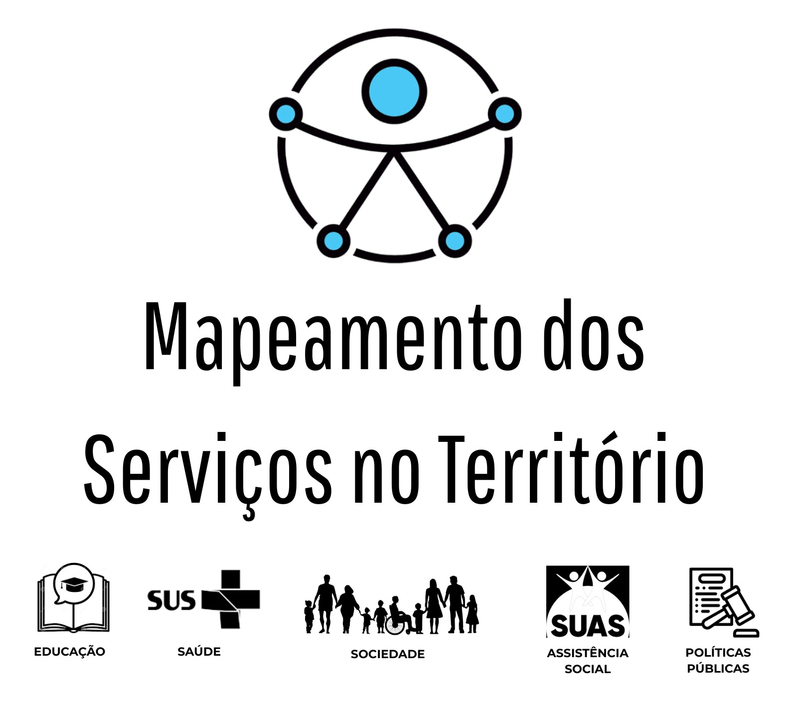
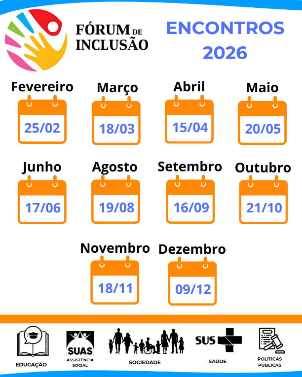
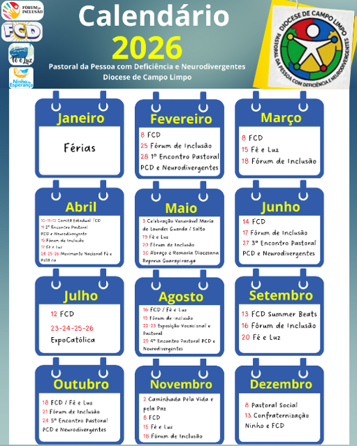
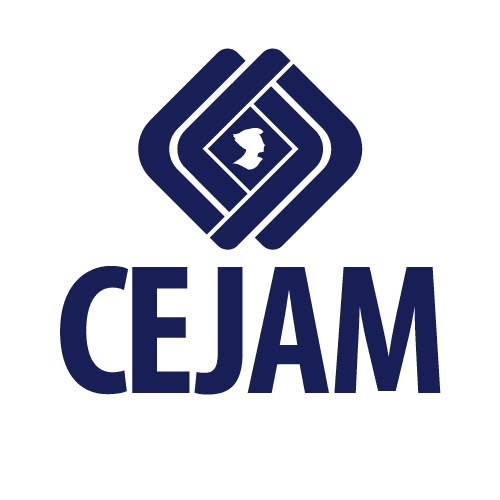
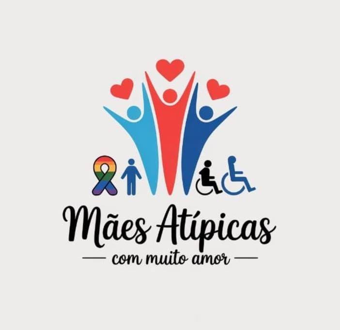
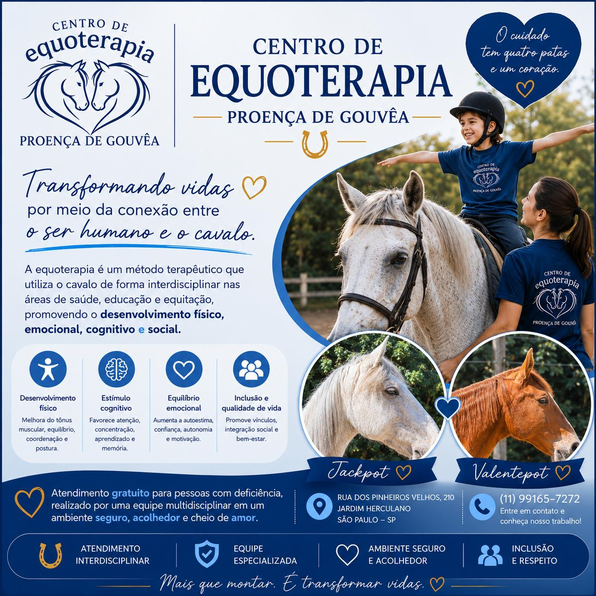
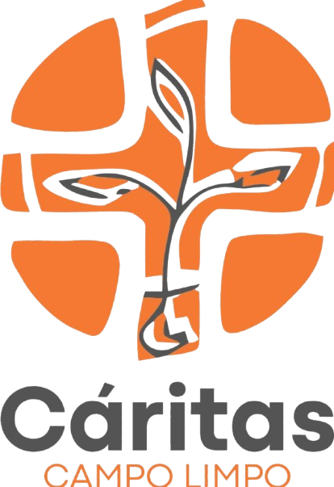
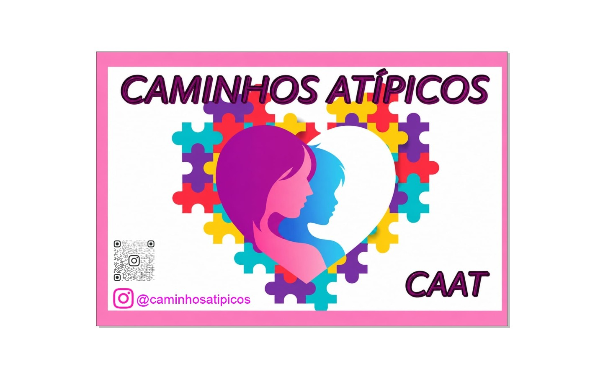
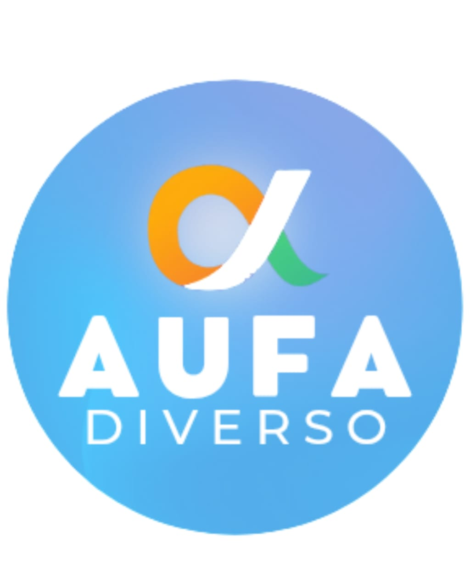
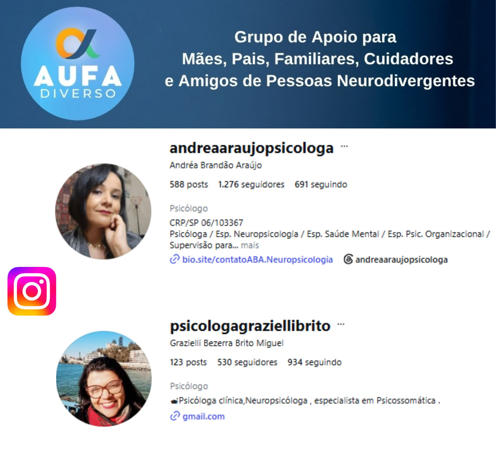
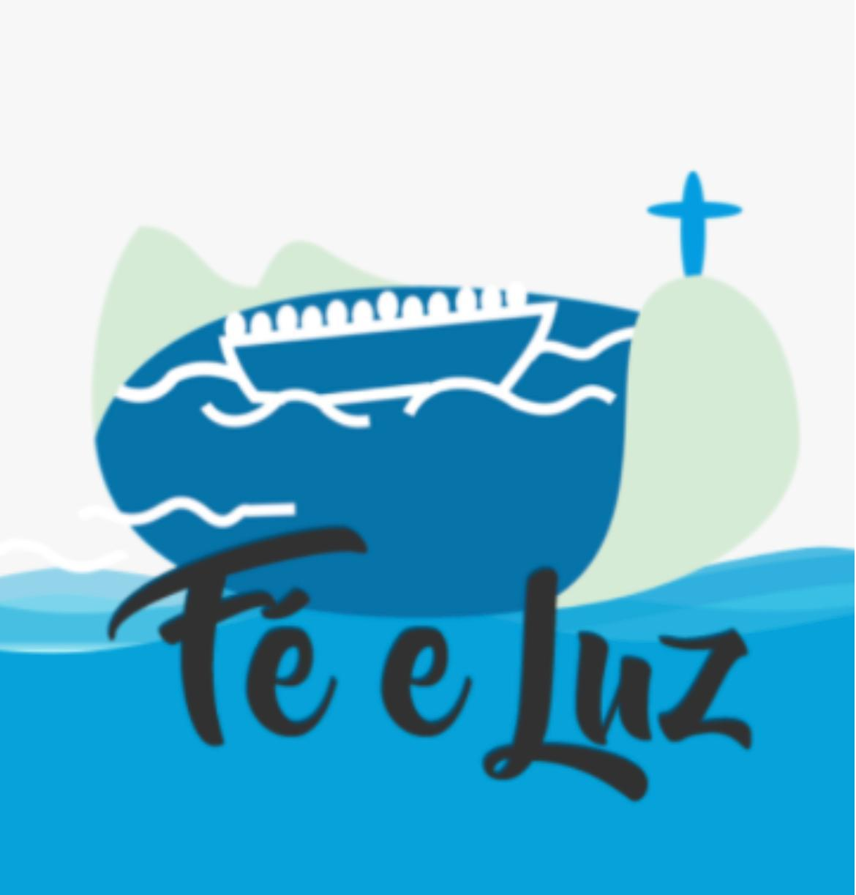
“O Fórum se tornou um refúgio onde cada mãe atípica redescobre que sua vida importa e o quanto elas são importantes para então seguir cuidando com amor.”
Cláudia Santos – Ninho da Esperança“O Fórum de Inclusão é um espaço de acolhimento, escuta e fortalecimento, onde ninguém precisa caminhar sozinho. O Fórum tem um olhar atento para as pessoas com deficiência e nos ajuda a sair da invisibilidade para a visibilidade, mostrando que, juntos, somos mais fortes para lutar por direitos, respeito, inclusão e dignidade. O material e as experiências compartilhadas ajudam a nos sentirmos mais confiantes e firmes para enfrentar os desafios.”
Tânia Otávio – Fraternidade Cristã da Pessoa com Deficiência – FCD“O Fórum de Inclusão é o principal apoio para o nosso projeto. Nele conhecemos pessoas competentes e cheias de vontade para trazer mais políticas públicas para a população do M’Boi Mirim.”
Ana Cecilia – Centro de Equoterapia Proença de Gouvêa“O Fórum de Inclusão me mostrou que ninguém precisa caminhar sozinho. Aqui, nossas histórias se encontram, nossas vozes ganham força e a inclusão deixa de ser apenas uma palavra para se tornar compromisso, luta e transformação.”
Alessandra – Caminhos Atípicos“Participar desse constante movimento seja do Fórum de Inclusão, da Pastoral da Pessoa com Deficiência e Neurodivergentes ou Fé e Luz, é esperançar por uma sociedade mais inclusiva, acessível e justa, onde os direitos, a dignidade e a vida das pessoas com deficiência sejam respeitadas e valorizadas.”
Andresa Lima – Fé e Luz“Mais empatia, menos barreiras. S2”
Edilene Rocha – NAISPD Guainumbi / Núcleo de Apoio à Inclusão Social Para Pessoas com Deficiência